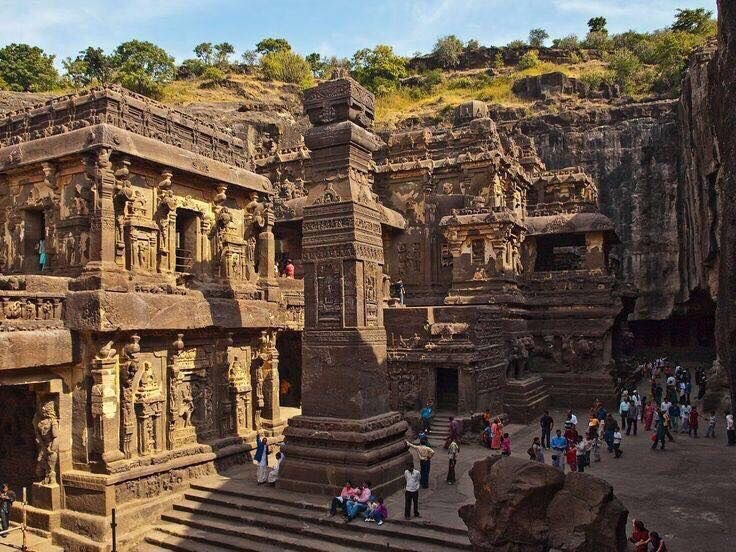

อารยธรรมอินเดีย

ความเป็นมา
อารยธรรมอินเดียมีจุดเริ่มต้นสำคัญบริเวณลุ่มแม่น้ำสินธุ และพัฒนาต่อเนื่องผ่านยุคสมัยต่าง ๆ
ความเจริญ
อินเดียมีความก้าวหน้าด้านคณิตศาสตร์ ดาราศาสตร์ การแพทย์ ภาษา และศาสนา อีกทั้งยังเป็นแหล่งกำเนิด ศาสนาพุทธและศาสนาฮินดู